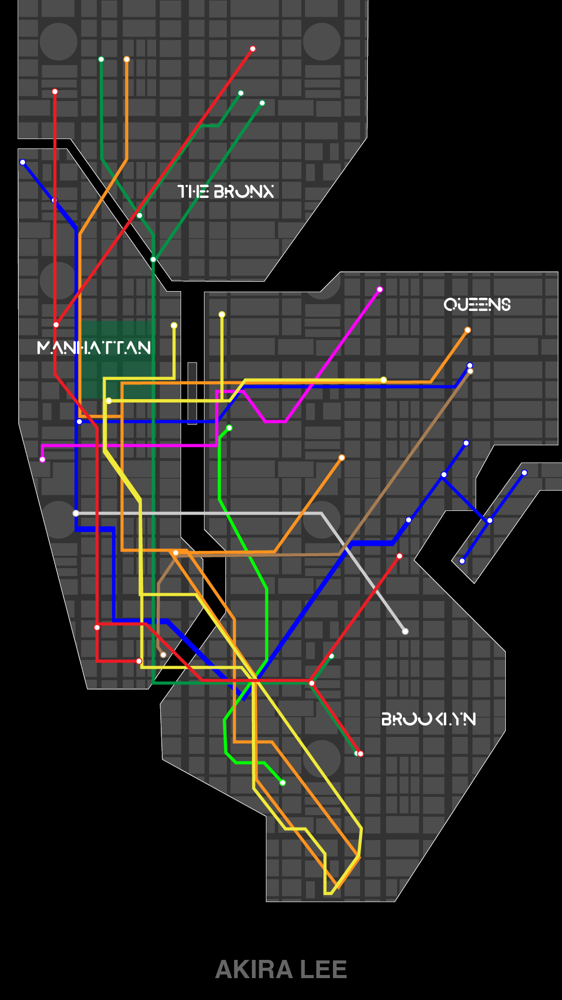

<!DOCTYPE html>
<html>
  <head>
    <meta charset="UTF-8" />
    <style>
      body {
        margin: 0;
      }

      main {
        overflow: hidden;
        width: 100vw;
        height: 100vh;
      }

      img {
        max-width: 100%;
      }

      video {
        max-width: 100%;
      }
    </style>
  </head>
  <body>
    <main>
      <!-- IMAGE -->
      <!--  -->

      <!-- VIDEO -->
      <video
                src="https://akiraxcc.github.io/WebUnderground/assets/Akira_Lee_NYC.mp4"
                autoplay
                muted
                loop
            ></video>
    </main>

    <script>
      setTimeout(refresh, 15000)

      function refresh() {
        location.reload(true)
      }
    </script>
  </body>
</html>
